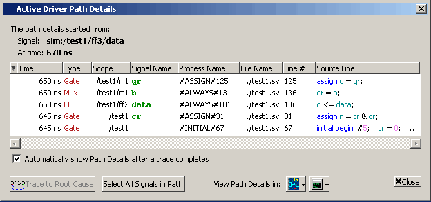
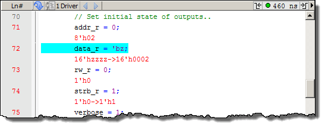

Causality Traceback
allows you to trace an event back to the root cause of that event,
crossing multiple clock cycles and even multiple clock domains.
Prerequisites
Run the simulation.
Procedure
- Select a signal of interest
in the Wave window.
- Click the selected signal’s
waveform at any point to place a cursor there. The time of this
cursor is the start time of the causality trace.
- Initiate a root cause trace
using any of the following methods:
Right-click anywhere in
the waveform pane and select from the popup
menu.
Click and hold the Event
Traceback button until the drop-down menu appears, then select Show
Root Cause from the menu.
If you have performed a
trace to the first sequential process (Show Cause), or a trace to
the immediate process (Show Drivers), you can initiate a trace to
the root cause from the Active Driver Path Details window by clicking
the Trace to Root Cause button.
Results
The Active Driver Path Details window
displays a list of all the signals linked from the root cause to
the event of interest, as shown in Figure 1.
Figure 1. Trace Event to Root
Cause
The Source window jumps to the root
cause source code and highlights the relevant line (Figure 2).
Figure 2. Root Cause Highlighted
in Source Window
The Transcript window displays the
command line equivalent of the GUI actions:
find drivers -source -time {<time>} -root <signal>
The -root switch for the find drivers command initiates the trace to the root cause of
the selected event.